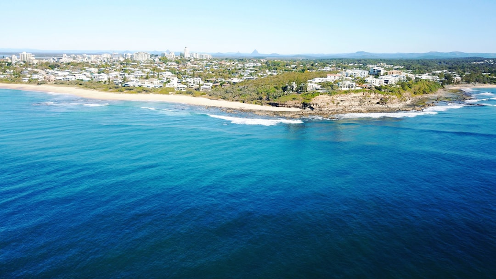

The published guide reduces a retaining job to a few hard checks before anyone argues about finishes: wall face area, ground type, drainage, and whether the wall is low and simple or moving into an engineered approval pathway. Its indicative rates run from about $150 to $300 per square metre for rock and boulder, $250 to $430 for gabion, $300 to $450 for timber, $550 to $700 for concrete sleepers, and $550 to $750 for core filled block, excluding GST, excavation, drainage, imported backfill, engineering and certification.
When people compare retaining walls sunshine coast jobs, the useful question is whether the site needs a low terrace, a compact replacement wall, or an engineered structure carrying extra load.
Retaining Walls Sunshine Coast Explained
The published guide from Retaining Wall Sunshine Coast is most useful when you treat the wall as a ground problem first. Its own example is a strong one: a wall on the Blackall Range at Maleny and a wall on canal fill at Maroochydore are not variations of the same job. The same material can behave very differently once slope, soil and water movement change.
That is why the first useful document is not a mood board but a brief. Put down the wall height, the length, the suburb or postcode, and what sits above the wall. A low garden edge has a different burden from a wall holding up a driveway or another loaded area. Those details decide whether you are pricing a simple terrace, a replacement on cut and fill ground, or a job that is already edging into engineering and permit work.
The local detail worth paying attention to is the ground itself. The guide names Blackall Range basalt clay, Buderim volcanic soil, Landsborough sandstone and coastal dune sand as examples of conditions that call for different solutions. That gives owners a better question to ask in early conversations: why does this wall type suit my block, rather than why is it popular somewhere else?
A low terrace and a surcharge wall should not be quoted the same way
A useful contrast from the source material is the difference between a low terrace and a wall carrying more consequence above it. For a modest garden fall, timber can still make sense because the brief is contained and the guide still places timber terraces on low retaining work. If the owner mainly wants a clean step in the yard, the key test is whether the wall remains in that lower duty role or whether hidden site pressures are being ignored.
Now compare that with a wall supporting a driveway, a tighter cut and fill edge, or a taller section that is likely to move into design and certification. In that setting, the choice is not just about appearance. Concrete sleepers are described as the workhorse option for many replacement walls, while core filled block enters the discussion when the job is taller, engineered or intended for a rendered finish. Rock and boulder walls can also be sensible, but only where there is room to batter back into the slope.
Gabions are a separate decision again. The guide points to them for scour, surface runoff and erodible ground, and that tells you the real trade off. If free drainage is the main challenge and the site can spare the width, a gabion wall may solve the site problem more directly. If the boundary is tight and every bit of width matters, a broader structure may be harder to justify even if the drainage logic is strong.
Drainage is part of the structure, not a finishing extra
The source page is unusually clear on one point owners often leave until too late: drainage sits behind every wall choice. It names ag drain, aggregate and geofabric as part of the drainage build up behind the wall, and treats that detail as structural rather than cosmetic. It also says poor drainage is the leading cause of wall failure.
That changes how you should read a quote. A cheaper figure is not automatically a better one if the drainage detail is vague, omitted or shifted into an allowance. Even where a wall type is naturally freer draining, such as rock or gabion, the page still frames subsoil drainage as a requirement behind retaining work on this coast. The comparison that matters is not only what the face looks like, but what is happening out of sight.
If you are assessing a repair, this section matters even more. The guide includes repair and replacement work for failing, bulging and cracked walls, which is a reminder not to assume an old wall only needs a cosmetic fix. Before discussing finishes, ask whether the drainage detail and the existing condition point to repair, partial rebuild or full replacement.
Use the rate bands to narrow options, then price the exclusions
The indicative rates are valuable because they create a first filter, not because they deliver a finished budget. The guide prices walls by square metres of wall face, calculated as height multiplied by length. Its own example is simple and useful: a wall 1.2 metres high and 10 metres long equals 12 square metres of face. That one step often changes the conversation because a job that sounds short can still present a sizeable wall area.
From there, the published bands give a realistic order of magnitude. Rock and boulder sit at about $150 to $300 per square metre, timber at $300 to $450, gabion at $250 to $430, concrete sleepers at $550 to $700, and core filled block at $550 to $750. Those numbers are only indicative, but they are still enough to rule some options in or out before formal quoting starts.
The caution is in the exclusions. The guide says those bands exclude GST, excavation, drainage, imported backfill, engineering and certification. That means two quotes can look similar on the face rate and still be pricing different jobs. If you want a quick first pass, the cost calculator is useful, but the real comparison happens when each quote spells out what is inside the scope and what is not.
Approval checks that change the job
The approval side deserves its own pass because it can shift the whole scope. The page says Sunshine Coast Council requires a building permit before construction, modification or repair of most retaining walls, and its own concurrence approval for walls over 2 metres. It also says walls over 1 metre, or walls carrying a surcharge, typically move onto an engineered pathway designed to AS 4678 with Form 15 and Form 16 certification.
For owners, the practical lesson is to sort out the approval path before treating one rate as directly comparable with another. If a wall is taller, loaded from above, or already showing failure, ask whether the quote assumes engineering, permit work, inspection and certification, or whether those items sit outside the price.
The source also makes a useful correction to a common assumption: QBCC licensing is triggered by the value of the work, not the height of the wall. So a lower wall is not automatically a simple job, and a taller wall is not only a materials decision. The next action is straightforward, get the site facts in writing, test the wall type against the ground and drainage, then verify exactly which approvals and exclusions have been allowed for.
- Describe the wall. Write down height, length, suburb or postcode, and anything sitting above the wall before seeking prices.
- Test the site fit. Check whether the recommendation is being driven by width, drainage, finish, repair status or extra load above the wall.
- Measure the face area. Use height multiplied by length so you can read the published rate bands in the right units.
- Check approvals and exclusions. Confirm whether permits, engineering, certification, excavation, drainage and imported backfill are included or excluded.
| Site constraint | Option worth testing | Question to settle |
|---|---|---|
| Low garden fall | Timber sleeper | Is this still a low terrace rather than a loaded structural wall? |
| Tight residential footprint | Concrete sleeper | Does a compact wall solve the site without giving away usable width? |
| Tall wall or rendered finish | Core filled block | Have design, certification and approval costs been allowed for? |
| Room to batter back | Rock or boulder | Is there enough space behind the face for the profile to work? |
| Runoff or erodible ground | Gabion | Is extra width acceptable if drainage is the priority? |
Common questions
Why can two walls of similar length have very different prices? Because the guide prices by square metres of wall face, not by length alone, and because the site conditions can push the job into different materials, drainage details and approval requirements. It also states that excavation, drainage, imported backfill, engineering and certification sit outside the indicative bands.
When does a wall stop being a simple garden job? The source points to two practical triggers, extra load above the wall and height. It says walls over 1 metre, or walls carrying a surcharge, typically move into an engineered pathway, which is a different exercise from pricing a low terrace.
What should I ask if an old wall is bulging or cracked? Ask whether the condition points to repair or full replacement, and whether the drainage behind the wall is being assessed as part of that decision. The published guide includes repair and replacement work for failing walls and identifies poor drainage as the leading cause of failure.
This guide covers wall choice, drainage, approval triggers and quote checks for Sunshine Coast retaining projects.